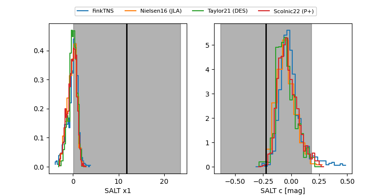

FINK: ZTF25abpzsix
Lasair: ZTF25abpzsix
ALeRCE: ZTF25abpzsix
TNS: 2025xfk
YSE: 2025xfk
ZTF25abpzsix (ztf,fink)
2025xfk (tns,yse)
equatorial (ra, dec) = (345.3341,-10.94899)
galactic (l, b) = (59.6084,-59.48399)

last ps1::g=20.05, ps1::r=20.14, ztfg=19.53
2 ps1::g, 2 ps1::r, 1 ztfg detections